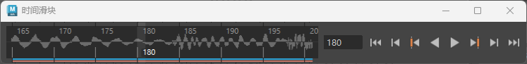

导入音频文件时，音频波形会自动显示在“时间滑块”(Time Slider)中。

提示：
通过在颜色设置(Color Settings)（位于“动画”(Animation)区域中）中更改“声音”(Sound)色样，可以更改波形的默认颜色。
如果导入多个音频文件，那么“时间滑块”(Time Slider)会自动切换到“使用 Trax 声音”(Use Trax Sounds)模式，从而将每个声音文件表示为实线，而不是波形。
可以通过三种方法指定在“时间滑块”(Time Slider)中显示哪个音频文件
- 从“动画”(Animation)菜单集 (F4) 的“音频”(Audio)菜单的“声音”(Sounds)区域中选择音频文件。
- 在播放选项(Playback Options)的“音量”(Volume)图标
 上单击鼠标右键，然后从场景中加载的音频文件列表中进行选择。
上单击鼠标右键，然后从场景中加载的音频文件列表中进行选择。
- 在“时间滑块”(Time Slider)上单击鼠标右键，然后从显示的弹出菜单中选择“音频”(Audio)> 音频文件。（其中 audio file 是要显示的音频文件的名称。）
所选择的声音的音频文件波形显示在“时间滑块”(Time Slider)中，并在播放期间播放。
注： 播放速度必须设置为“实时”(Real-time)，否则您只能在拖动时听到声音，但在播放过程中听不到。为此，请右键单击 Maya 的“时间滑块”(Time Slider)，并从“播放速度”(Playback Speed)选项中选择“实时”(Real-time)。
在“时间滑块”(Time Slider)上显示多个音频文件
- 在“时间滑块”(Time Slider)上单击鼠标右键，然后选择。
波形消失，并显示一条线以表示已导入的声音文件。
删除音频文件
您可以从场景中禁用音频文件，也可以完全移除音频文件：
可以通过三种方法从场景中删除音频文件
- 选择
- 在播放选项(Playback Options)的“音量”(Volume)图标 上单击鼠标右键，然后展开“删除声音”(Delete Sounds)卷展栏，其中显示了与场景关联的所有音频文件的列表。选择要删除的文件。
- 在“时间滑块”(Time Slider)上单击鼠标右键，选择，然后展开“删除声音”(Delete Sounds)卷展栏，其中显示了与场景关联的所有音频文件的列表。选择要删除的文件。
可以通过两种方法从“时间滑块”(Time Slider)中清除音频文件
- 在播放选项(Playback Options)的“音量”(Volume)图标 上单击鼠标右键，然后选择“禁用”(Off)。
- 在“时间滑块”(Time Slider)上单击鼠标右键，然后选择“声音 > 禁用”(Sound > Off)。这将禁用音频。